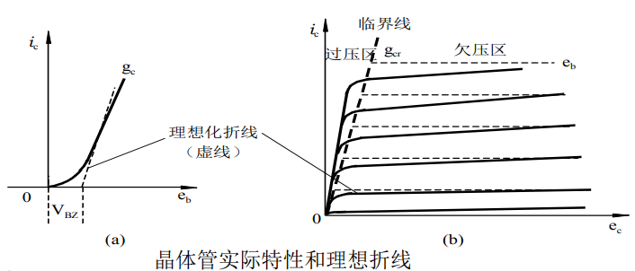
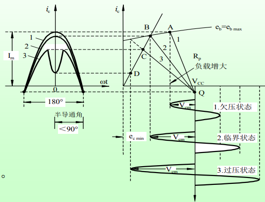

本文最后更新于：6 个月前
1 前言
也快学期末了，是时候复习一下专业课了。
今天简单复习一下高频第五章的课，过这么久也就别指望能深入到太原理层面复习了，还是更注重作业题吧。
电路别忘完了啊：
【阻抗Z】=【电阻R】+j【电抗X】
【导纳Y】=【电导G】+j【电纳B】
2 【第二章】选频网络 √
2.1 基本概念
（填空题）选频网络的作用：选频、负载、信号传输（耦合/阻抗变换）
教材：选频网络能够选出我们需要的频率分量和滤除不需要的频率分量
2.2 串联谐振回路
2.2.1 重要参数
定义 -> 电路 -> Z -> X -> ω0 -> ρ -> Q -> ξ -> N(f) -> B -> φ−ω
串联谐振回路有如下重要参数：
- 谐振频率 ω0
谐振频率是由储能元件决定的，
ω0=LC1
- 特性阻抗 ρ
回路谐振时，电路呈现纯阻性，感抗等于容抗，即特性阻抗：
XL0=XC0=ω0L=ω0C1=L/C=ρ
- 品质因数 Q
用于表示回路损耗大小的值。谐振的时候，特性阻抗和电阻的比值称为品质因数：
Q=Rω0L=ωocR1=Rρ=R1∙CL
扩展：谐振时，电感和电容上的电压达到最大值，且为输入电压的 Q 倍，需要注意耐压问题
∣ν˙Lo∣=∣ν˙Co∣=Ioρ=RVs∙ρ=Vs∙rρ=Vs∙Q
- 广义失谐系数 ξ
与品质因数相似，广义失谐系数描述回路失谐大小，由失谐电抗比电阻：
ξ=R((失谐时的电抗)X)=RωL−ωC1=Rω0L(ω0ω−ωω0)=Q0(ωoω−ωωo)
失谐不大的时候：
ξ≈Q0⋅ω02Δω=Q0⋅f02Δf
- 谐振曲线 N(f)
描述了回路电流和输入电压频率之间的关系，Q 值越大越尖锐，选择性越好，越小越宽，通带宽。Q 值不同即表示损耗 R 不同。
N(f)=回路谐振电流当前回路电流=1+jξ1
- 通频带 B
回路外加电压幅值不变，改变频率后，结合谐振曲线观察，当回路电流下降到谐振电流的 21 时，对应的频率范围即通频带。根据上述定义，当 I˙oI˙=1+ξ21=21 时，则说明广义失谐系数为 ±1 ，则根据失谐系数与品质因数的关系有：（失谐不大时）
B=2Δω0⋅7=Qω0
- 相频特性曲线 φ−ω
呃，好像没怎么用到：
2.2.2 能量关系
谐振时，无疑是输出功率最大的（回路电流最大）。电感和电容上存储的瞬时能量最大值相等。整个回路中的能量保持不变，在线圈和电容器之间相互转换。
2.3 并联谐振回路
定义为电感、电容和外加信号源相互并联的电路。但由于电感线圈是有一定的内阻的，为了计算方便，可以将电感内阻转化为电导，如下图所示：
2.3.1 重要参数
- 谐振频率 ω0
高频情况下 ωL>>R ，回路谐振时，电纳为零，谐振频率与电阻无关，依然为：
ω0=LC1
XL0=XC0=ω0L=ω0C1=L/C=ρ
- 谐振电阻 Rp
注意谐振电阻并不等于 R，为做区别加入下标。
Rp=Gp1=LCR1=CRL
考虑与特性阻抗的关系，有以下关系：
RP=ρ2/R
- 品质因数 Qp
与串联一致，谐振的时候，特性阻抗和电阻的比值称为品质因数：
Qp=Rρ
考虑与谐振电阻以及特性阻抗的关系，有以下关系：
RP=Qp⋅ρ=Qp2⋅R
由 RP=Q⋅ρ 可以看出，谐振电阻为特性阻抗（感抗/容抗）的 Qp 倍，若 Qp 很大时，谐振电阻将会非常大。
Qp 一般为几十到几百，信号源的电流不大，而支路上的电流却为信号源的 Qp 倍，因此并联谐振又被叫做电流谐振。
ξ=R((失谐时的电抗)X)≈Q0⋅ω02Δω=Q0⋅f02Δf
- 谐振曲线 N(f)
【回路端电压】在信号源电流不变时，与【频率】的关系。串联回路用电流比表示，而并联回路用电压比来表示。
N(f)=回路谐振电压当前回路端电压=1+jξ1
电路性质：
B=2Δω0⋅7=Qω0
- 相频特性曲线 φ−ω
（）
负载和内阻对于回路的影响
并联谐振回路的 QL 与 Rs 和 RL 同相变化，因此在 Rs 和 RL 较大的情况，可以使用并联谐振回路，而获得较好的选择性（Q 变大）
2.4 等效互换，阻抗变换
2.4.1 电感抽头
接入系数 P：抽头点电压与端电压的比
P=VdbVab
同时也等于：
P=L1+L2L1=LL1
由接入系数出发，由于能量上的等效，所以：
Rs′=P21Rs
Is′=Is⋅P
2.4.2 电容抽头
P=n1=C1C2=C1+C2C2其中C=C1+C2C1C2
3 【第三章】高频小信号放大器
3.1 Y 参数与等效电路
3.2 电压增益的计算
4 【第四章】非线性电路、时变参量电路、变频器
45678 章都属于非线性电子线路，本站开始对后面的章节做了一点铺垫。
4.1 非线性电路
4.1.1 非线性元件的频率变换作用
4.2 变频器
4.3 混频器
5 【第五章】高频功率放大器 √
5.1 概述
第五章题目是高频功率放大器，作用和其出现的理由如下：
- 作用：放大高频大信号，使得其在发射机的末级能够获得足够大的功率
- 出现理由：解决高效率与高功率输出两个问题
简单来说，这种放大器有如下特点：
- 工作频率高
- 相对频带宽度窄
- 负载形式为选频网络
- 工作在丙类/乙类状态
关于放大器的甲/乙/丙等类工作状态，找个时间再复习一遍吧目前暂时理解为跟通角 θc 有关吧。
感性上来理解，功率放大器简单说可以看作“能量转换器”，将供给的直流能量转换为交流能量，从而放大信号。
接下来会随手记录一点本章重点、题目以及个人理解：
- 谐振功率放大器的工作原理
- 折线法分析👆这个东西
- 应用电路
- 习题实践大概这四个部分吧。
5.2 谐振功率放大器
5.2.1 原理
牢记老师叮嘱，先上图。
谐振功率放大器的原理电路：可分为四个部分：
- 中间晶体管：起到放大作用的有源器件
- 右侧谐振回路：负载
- 下方俩直流偏置：为晶体管提供直流能量与静态工作点
- 左侧高频信号：输入，提供待放大的信号
晶体管的特性曲线：
左图为输入特性曲线，右图为输出特性曲线很明显是非线性的，所以用理想折线进行近似，此处 VBZ 就是截止偏压。由于这玩意工作在丙类状态，要求通角 θc 不是要 ＜90° 嘛，所以后面通过 VBB 和 VBZ 的配合便可以控制通角的范围。具体见下图。
工作在谐振功率放大器中的晶体管特性曲线：
中间就是晶体管的特性曲线，跟上面一样。下方是输入端的曲线，可以看到通过 VBB 的反向偏置，使得通角被限制在了一定的范围，可以假象一下若没有 VBB 的反向偏置，通角便会增大。右侧是输出端电流曲线，可以看出输出的集电极电流为尖顶余弦脉冲。尖顶余弦脉冲输入到谐振回路中，经过滤波作用，便可以输出正弦信号了。
晶体管各部分 V-I 关系曲线
5.2.2 功率与效率
谐振功率放大器的功率可以分成三个部分：
- 输出直流功率 P==VCC∗IC0
- 输出交流功率 PO
- 晶体管的集电极耗散功率 PC
这三个功率之间的关系为：
P==PO+PC
衡量谐振功率放大器的效率，集电极效率：
ηC=P=PO=PO+PCPO
5.2.3 折线法分析
先上图：

折线法分析其实主要是上面第一张图，不过出于个人因素，先记录一下之前模电就没有完全理解的第二张图。
这里的输出特性曲线，实际上每一次只能挑其中一条看，之前很多时候都误解了这一点。临界线，实际上可以理解为：在很多次不同的 eb 给定的情况下，随着 Rp 增长， ic 转折的点所拟合出的一条直线。另外在欠压区的这段线，其值约等于 vBmax=−VBB+Vbm，也就是包括了基极偏置电压和输入电压的最大值。
再说一下这第一张图，首先右上角的原型就是输出特性曲线，也就是刚刚说的给定一次 eb 的情况，左侧为输出电流和输入信号的关系，下方为 ec 和输入信号的关系。
输出特性曲线这里，随着负载的增大，ec 和 ic 都在变化，以 B 点为分界，A 点这边是欠压，C 点这边是过压，顺带一提，这里的“欠”和“过”描述的是指【交流输出电压】。
5.2.4 各部分电压变化引起的状态变化
下面分三部分讨论一下，改变直流供给电压和输入信号的振幅会引起【工作状态】怎么样的变化。
为讨论方便，再贴一下图：
5.2.4.1 改变 VCC 试试
由于只改变 VCC 其他不变，所以：
- 输出部分通角不变，输入电压振幅不变，转移特性曲线不会变化
- 负载也没有变，所以负载线斜率也不会变（或者叫动态特性，就是标 123 的那根线）
- 只左右平移负载线
5.2.4.2 改变 VBB/Vbm 试试
从图上可知，若增大 VBB ，则会使得通角变小，并且由于 vBmax=−VBB+Vbm ，因此增大的话会使得欠压区的这段线逐步下移，也就是若原本工作在临界的话，这时将会工作在欠压状态。同时改变 Vbm 也同理。
5.2.4.3 波形总结
欠压区记住这条就好：
vBmax=−VBB+Vbm
过压区的临界线记住这条就好：
iC=gcrvC
斜率就是饱和临界线跨导，注意跟输入特性曲线那边的跨导稍微有点区别。
5.2.5 应用电路（复合输出回路）
原理电路中的谐振回路在复合输出回路中被叫做【中介回路】，RA 和 CA 一起看，是【辐射电阻】和【等效电容】，Ln 和 Cn 在回路中用作调谐，使得天线回路处于谐振状态，以获取最大的功率。
从能量的角度来说，复合输出回路有两个地方有耗散功率，首先第一个就是上面讨论过的晶体管【集电极耗散功率】，其次就是中介回路中的【中介回路耗散功率】，因此实际做有用功的只是 Po−Pk 这部分了。
这里有几个做题里常见的参量，做一下记录：
r′
天线回路谐振时，反应到【中介回路】的等效电阻，也可以算是一种输出电阻吧
Rp′=C1(r1+r′)L1
将 r′ 考虑进来之后的【中介回路等效 Rp 】，可以看到和上面的 r′ 成反比
5.2.6 做题能用上的变量关系总结
系数：
Icm1=IC0∗g1(θc)
【波形系数】通常会给出通角，波形系数根据通角查表可得
Icmn=icmaxαn(θc)
【分解系数】跟上面有点微妙的区别，此处是由傅里叶级数求系数法所得的，大概意思就是用一个【由通角决定的系数】去分最大值吧（）
输出功率、效率：
PO=21VCMICM1=21Icm12Rp=21RpVCM2
第一个等号后面是定义，另外由于【欠压】的时候【输出电流】几乎不变，【过压】的时候【输出电压】几乎不变，因此这两种情况【输出功率】大致与【谐振阻抗】成比例增减
ηc=P=Po=Po+PcPo
这个还是好理解的，效率为【输出功率】比上【直流功率】其中，从能量守恒的角度出发，【直流功率】=【输出功率】+【集电极耗散功率】
谐振阻抗：
Rp=ICM1VCM
谐振啊，谐振
若关注于输出：
vCmin=gcriCmax
也就是说当输出电压最小时，输出电流最大
VCC=VCmax+VCmin
输出这边的电压关系
6 【第六章】正弦波振荡器
6.1 振荡器的分类
6.2 反馈型 LC 正弦波振荡器
7 【第七章】振幅的调制与解调
7.1 原理
7.2 电路
7.3 检波原理
7.4 检波电路
8 【第八章】 角度调制与解调
8.1 原理
8.2 电路
8.3 鉴频原理
8.4 鉴频电路
9 作业
9.1 第二章 5
9.2 第三章 2
9.3 第五章 6


9.4 第六章 2
9.5 第七章 6
9.6 第八章 3